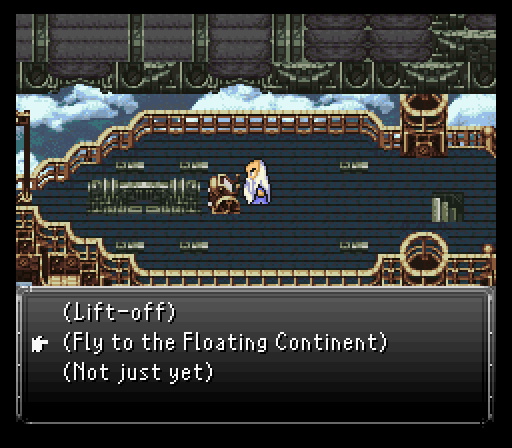
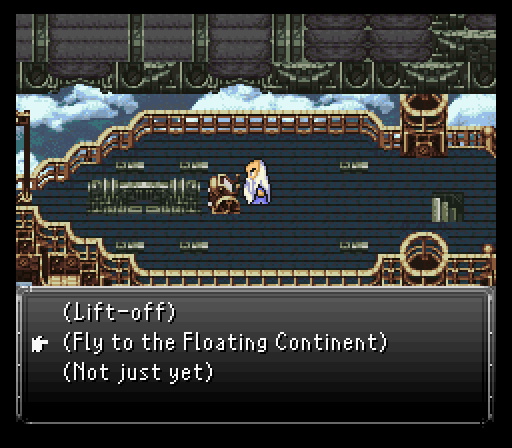
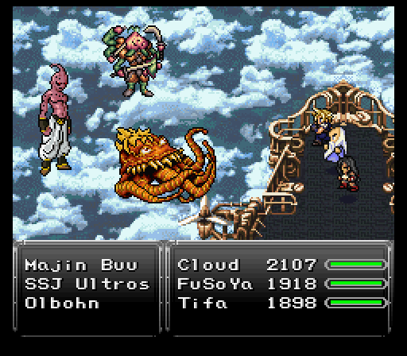
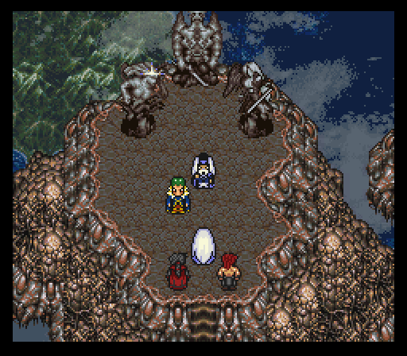
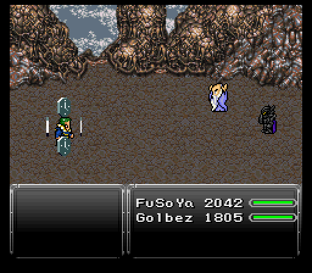
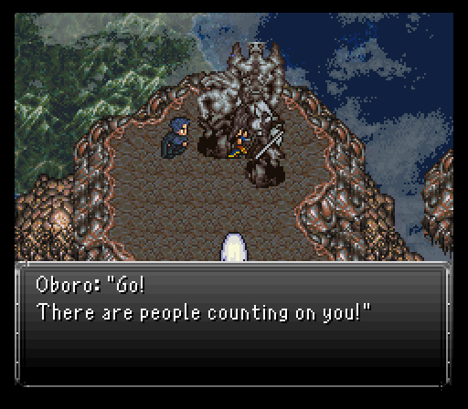
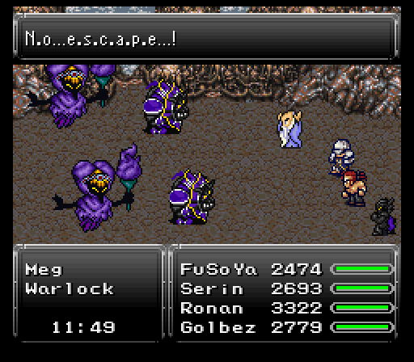
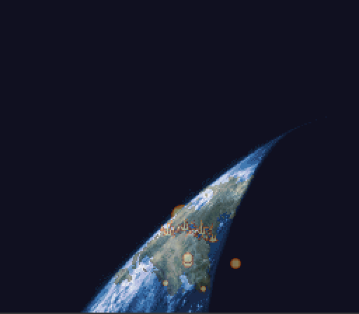

Part 19: Fate of Futures
Eagle's plight:
Training & preparations complete so it's time to fly to the Floating Continent. You can only bring three people to the dungeon and FuSoYa must be one of those three. Luckily FuSoYa's stellar magic list and two new Arcane spells I picked up for him in Aero (Wind AoE, learned from Klarrgas) & Mighty Guard (Protect & Shell for the entire party, learned from a Commando on the Beast Plains) make him very combat capable.
The other two don't really matter too much since everyone has something they can contribute to the team. For me, I took the lovebird duo of Cloud & Tifa, both whom picked up some valuable moves from their training. Cloud got his sixth Limit, Meteor Sword (AoE damage, can randomly inflict stop) while Tifa picked up Slowga & Hastega. Here is my equipment setup, you can go with whatever you see fit though of course:
 

The journey to the Floating Continent won't be hassle free sadly. The airship gets attacked by the empire's air squadron which consists of M-Tek Robots & Power Suits. Since every fight you get into here with the exception of the boss fight is a pincer, the damage they do can stack up very quickly. The M-Tek Robots are weak to lightning though, which is what the equipment setup is meant for. They are also weak to water. The Power Suits however are weak to Ice and Wind. It's important to act quickly and decisively, or risk being overwhelmed. And be sure to heal back up after each battle when given the chance.

After clearing out a bunch of the metal scrap, something pink approaches. A couple battles later, that pink thing drops off a friend...Ultros. Check your gear (fire & lightning resistance will help), heal up, then approach the octopus artist for what hopefully is the final battle with him.
You know an Ultros battle has gone full shenanigans when the song is actually serious...and the octopus himself brings the silliness. That's cause, somehow, someway, he's gone Super Saiyan. Doesn't help him fire Kamehamehas though. He just does his usual stuff like Tentacle spam & Splash. No massive tier 3 elemental spam or Rock Slide though. Hell, his defenses are god awful here.
After beating up on him, he decides to even the odds by bringing in a couple extra partners. One of them should be quite familiar to you, Olbohn. Has most of his moves from the Skull Train, just with higher stats and starts the battle with Protect & Shell.
The other partner? I guess Ultros found some way to be buddy buddy with Majin Buu cause that's who brought him up here. While his magical assault is pretty godawful, he's adept with physical strikes, attacking two or three times, sometimes with a more powerful strike, Tayoken.
Two items to steal here in Ultros's Soma Drop and Majin Buu's Golden Apple. Fire attacks work best on Ultros & Olbohn while you'll want to switch over to poison attacks for Buu.
Once the fight ends, all's good right? Not if the leader of the whole mecha army wants a word first, although I'm in FULL approval if it means a kickass series gets represented in this hack.

The leader is none other than Megaman X's venerable Storm Eagle, but here he's pulled a pokemon and evolved to Flame Eagle. That's one reference. Second is his backup, a pair of Thunder Slimers, the mid boss from Spark Mandrill's stage. That's two in total.
Finally, the song. This gets TWO reference points because it's a mix of Storm Eagle's own stage theme as well as resident fire maverick Flame Mammoth's stage theme. X shenanigans in FULL force here cause that's four references in a single fight, heh.
So, what does Flame Eagle bring to the table? A dangerous fight surprisingly. Flame Eagle's no slouch in dealing 700-800 damage like nobody's business and has some fairly strong AoEs in Whirlwind and, much more threatening, Cyclonic.
As for the Thunder Slimers, they're somewhat docile...until they use one of their worst moves, Delta Attack. That rips off a good 1600-1700 health from a target. Aerods is similarly nasty, ESPECIALLY if you get what happened here where Cyclonic was used right before it. That's why you want Rubber Shields on everyone so you can prevent that one-two punch from wiping you.
Oh, and they have Atomic Ray too. You REALLY don't want to see that after a Cyclonic, trust me.
Steal wise, there's X-Ethers from the Thunder Slimers and a Stamina Tab from Flame Eagle.
Since Flame Eagle will bring back the Thunder Slimers if they're both taken out, best to drop one, then focus on Flame Eagle. He's weak to ice & water, something FuSoYa can take advantage of very nicely with Blizzard. Tifa can do likewise with a pair of Frost Gloves or, if she's level 40, can spam Blizzard.
Once Eagle gets iced, you get a very nice relic drop, the Eaglehorn. Grants a two point boost to stamina & magic as well as auto haste, Protect, and Shell.

Floating Continent:
I do a bit of an equipment switchup before the trio takes off on the Floating Continent, since there's no more use for that lightning setup anymore. After a pair of Ninjas are swatted away, they find Oboro who's still alive and kicking. Clearly the empire failed hard in trying to off him and now they're about to have him come knocking back on their doorsteps. Be sure to equip him in case he doesn't have anything. He can use Leviathan so toss that onto him to begin teaching him Flood.

As for the Floating Continent enemy wise, they hit rather hard as you'd probably expect. Make sure to enter every fight at full hp because lots of enemies can easily lop off 800+ health without warning. There are a bunch of new ones and some returning.
Possible monster encounters:
- Behemoth - They hit hard and frequently and unsurprisingly have a lot of hp. Be careful if using a Summon attack against them, they can counter with a strong non-elemental spell called Ninth Dimension. They give a good amount of exp.
- Deathwing - This legendary dragon has unbridled strength and can use Revenge and Inferno. They can counter Havoc or Summon with a special attack or Beam Out, and regular attacks can get countered with Dancing Flame. They give a great amount of exp and gil.
- Klarrgas - Fought them recently at the Pirate's Hideout.
- Hachiman - Highest level of all the monsters here, uses only physical attacks. Its special attack, Forgotten Sword, attack can instantly kill.
- Meat - Fought one of these annoying bastards much earlier inside the room at Rogue City. Watch your levels!
- NigiMatama - Was a rare encounter at the Pirate's Hideout. See that section for reference.
- Ninja - Fought one in the Underworld. They use skeans and go invisible when hit by a regular attack.
- Poe Boy - High level, uses Plague and Death. If it's the last monster alive will continuously use Holy.
- Spookly - Could've possible fought one earlier as a rare encounter in Rogue City. They throw War Machetes if left alone.
- SweetTooth - Could've possible fought one as a rare encounter in the Underworld.
- Wraith - Undead. Uses Lifeshaver a lot, and other annoying spells like Rippler and Drain.
Dungeon is pretty linear. There's a couple detours you have to make to hit a switch and lower a platform, but nothing too special otherwise.
Treasure wise, there's an interesting one just southeast of the first warp. It's a monster in a chest, but with one that gets the boss theme, Colossus.

Colossus is best described as a much more vicious version of Majin Buu. It drops any pretense of magic aptitude in favor of walloping people really hard with physicals. A critical normal hit can easily break 2k while Hammer Smash can likewise do that, but without the crit requirement. Couple that with the fact it can perform multiple attacks each time it acts and you can very easily get overwhelmed if you're caught off guard like I was at the start. Luckily I didn't game over, heh.
I recommend putting Vysage on FuSoYa and using it first thing to prevent some physical attacks for a while.
Other than that, Colossus has access to Revenge which may as well be instant death if it connects since it's packing 17840 hp and you'll be well past the one hit kill threshold before the demon expires.
Thankfully, Colossus is weak to ice & holy. If Ronan's in your party Aura Blast can hit the holy weakness while there's a plethora of options for ice. FuSoYa has Blizzard as does a level 40 Tifa, Frost Gloves, Glacial Maces, and so on. It hits really hard, but it dies rather fast too.
Colossus has an Elixir to steal and drops the Crystal Ball relic. Boosts magic by 5 and max mp by 50%. Probably the go to relic for FuSoYa right now if the Void Stone is taken up by someone else.
Hidden treasure: There is a Golden Apple inside the save point room if you walk straight down.

Eventually, you'll reach the part of the dungeon where you can hop back on to the airship if you want to go pickup supplies or, in my case, change the team around. One timeskip later has Cloud & Tifa tagging out for Serin & Ronan, then everyone going forward to find that Zuriel left a guard in place to make sure nobody passes, Ultima Weapon.


Ultima Weapon packs a rockin' boss theme (You Will Know Our Names from Xenoblade Chronicles) and is a viable threat. It can attack twice every time it's up to act, hits about as hard as Colossus on the physical front, and has access to the tier 3 elemental spells. Worse yet, it has Flare which does ~1500-1700 damage. That can easily knock out a frontliner if a physical hits them beforehand. It also uses some annoying spells like Slow and Expel. It can counter regular attacks with one of its own, and Aether or Throw with its special attack, Light Pillar, which is twice as strong as its regular attack.
Just to annoy you as well, it has Anti-Magic Field & Mute to rip off buffs and seal magic respectively. The former is more dangerous since you don't want to spend very long without defensive buffs up. For Summons I put Search Ghost on Oboro, Vysage on FuSoYa, Sylph on Ronan, and Yu Yevon on Serin, all of which will be used at the onset of battle...not necessarily because we need to, but because it is cool and epic. Just make sure to use Search Ghost last. Having Float in this battle is very important because Ultima Weapon uses Quake.
With Serin here, you can probably guess what my strategy is. Have him spam Psionic Wave until he gets a fire, ice, or lightning weakness applied, then he goes into support mode with Cura spam.
The rest? Dogpile the demon with whatever element weakness gets applied. Even with its inherent regen, with FuSoYa doing ~7k per tier 3 elemental weakness hit and Oboro ~4k per elemental scroll on a weakness hit, killing Ultima Weapon does not take long, even if the jerk wallops Serin right before it dies...classy.
Steal wise, there's an Omni Elixir up for grabs.
If this battle should play out longer, which it very well might if Serin isn't in your party, at the end of his second phase Ultima Weapon will use Mind Blast, which can inflict a beavy of bad statuses. Then Ultima Weapon will change to its third phase and a message will pop up saying that "vast energy is being focused" and Ultima Weapon will glow yellow, secretly gaining a bunch of hidden statuses which you'll want to dispel promptly.
It'll then chain a couple regular attacks together and use Anti-Reflect, which'll give bad statuses to any character that has wall status up, following that up with either Plague or Primal Rage. Then it'll glow yellow once more and cast Quake. Then chain a couple more attacks together. Now, if it still hasn't lost enough hp to enter it's near-death stage, it'll glow red and use Flare Star, which basically does fire damage based on the target's level.
When Ultima Weapon is edging close to death, it has access to Gravity, which cuts a target's hp by 75%, and a couple other strong spells like Ninth Dimension and the aforementioned Quake. Besides that, nothing we haven't seen before. When it's very low on hp it'll counter all attacks with Flare or Black Shock, or nothing if you are lucky. Just survive that and keep dealing damage until you finish it off.
Zuriel's planet-shattering kaboom:
Oboro decided to leave cause he supposedly works better alone. Considering Zuriel's literally right up the stairs, that might not have been the best play at first glance.
The encounter with Zuriel goes amazingly well with FuSoYa's allies getting neutralized, then himself getting faceplanted into the ground. Gestahl doesn't believe FuSoYa's claims that Kefka is really Zuriel, but he also doesn't want "Kefka" to cause an earth shattering kaboom to end the world. His life gets snuffed out, but not by a bolt of godly lightning...well, unless you consider Golbez that bolt of godly lightning, then yes, that did happen to him.
Zuriel gets up, then decides out of the blue to try persuading Golbez to join his side. It works about as well for him as it did for Sigma in Megaman X Mavericks Final trying to persuade X. Basically, Golbez takes orders from nobody and he's kicking Zuriel's ass alongside FuSoYa, simple as that.
Zuriel honestly has gotten one too many ass kickings because his damage is pretty damn pathetic. Toxic Bomb is the only move that'll do any giant chunk of damage. To make things even easier, Kefka/Zuriel is still susceptible to Stop.
On the plus side? FuSoYa & Golbez have access to Meteor. Pretty expensive at 112 mp a cost, but it punches through Zuriel's hefty defensive bulk nicely. Three or four casts will put him down once, if not very close to it. He has auto-life active so you'll likely need to put one more Meteor casting down to end the fight...or so you think.
Zuriel barely felt the pain from that and decides to put Gestahl's corpse to good use as a sacrifice to bring back a demon FuSoYa & Golbez know all too well, Zemus. Unfortunately FuSoYa & Golbez also get some help from an interesting source...Oboro. Turns out Zuriel REALLY should have killed him because now it's a three on two fight.


While Zuriel hasn't changed from the first scuffle, Zemus is a more credible threat. His magic can give Oboro a bit of a beating, but Golbez is pretty damn tanky and a Prism Cape on FuSoYa makes him able to likewise survive anything tossed at him. Zemus does have a magic barrier, but if you spam Meteor like you did in the first battle, Zuriel gets hit hard and it breaks Zemus' barrier.
The only concern from Zemus is when he flashes. On his next turn, he's going to unleash Crossfire, a powerful fire AoE that can easily do 2000 or more damage on low mdef targets.
Zemus does have a Lich Ring to steal so if the opportunity comes up, have Oboro swipe it while equipped with a Thief Knife or Bone Shank.
Once enough damage has been dealt, Zemus decides to cheap shot the good guys with Heartless Angel before expiring.
Zuriel thinks he's a cheeky bastard by moving the statues to kickstart the apocalypse, but once again he FAILED to kill Oboro and he's gonna buy time so the rest of the crew can escape. Cue the escape sequence which gives you a pretty lofty 18 minute timer to make it to the airship.
At the very least, throw a couple relics onto Golbez. I give him the Talisman which doesn't seem to do much in lowering the enemy encounter rate along with a Cosmos Ring. There are both random battles and a few set ones.
Possible monster encounters:
- Imp Poe - Mainly spellcasting. Special attack causes zombie.
- Meg - Can't run. Uses Freezing Dust, chance to counter magic with Mute. Funnily enough, casting Hex on them causes them to un-Hex themselves and run away.
- Rotsucker - They have decent attack power and use wind spells.
- Shokan - Can't run. Uses medium damage spells and Rock Slide. Special attack causes stop. If for some reason they are silenced, they can regular attack up to four times in a row...which makes sense I guess considering how many arms they have.
- Pain Demon - Rare encounter. These suckers are tough, they have a lot of hp and hit hard. But there is just one of them thankfully. They can cast Nova and Death, and in very rare cases Animate Dead, which brings back a dead ally as a Zombie. Their special attack also causes zombie.
- Vlakorados - Another tough, albeit solo high-hp beast whose Thunderstomp special can instantly KO any character.
- War Golem - These guys make a return from the Magitek Factory to hinder our progress yet again.
- Warlock - They use low level spells, but buff monsters and slow or stop characters upon being attacked.
Basic strategy here...cast Teleport on ANY fight you get into. The exception is if you run into Shokans or Megs. They prevent running so you'll want Golbez & FuSoYa spamming Meteor while the others should focus on the Megs. Serin in particular works nicely here with spamming Psycho Blade for additional AoE damage. The Warlocks potentially casting stop or slow on a character is exactly what we don't want to happen here, being in a race against time and all, so cast Death on them to remove them instantly.
Eventually, you'll see a second treasure that seems all too easy to go directly to. Don't take the bait because the ground will give way and prevent you from getting it. Take the long way around and you can claim the Stamina Tab.
As for why you've got an 18 minute timer? Turns out SOMEONE wants a chance at redemption...and no, it's not Ultros for a fifth time. Rather, it's the crazy loony saiyan Raditz.

Raditz is much like Zemus...able to output some decent damage, especially if he goes Super Saiyan...which is both amazing and hilarious. He's got a couple moves in Hyper Drive & Giga Volt that can easily do 2k damage or so. He'll also use some of Ronan's Combo skills, such as Thunder Fist, Meteor Smash and Aura Blast. That's about it though, besides some attacks he used the first time.
His changing back and forth from normal to Super Saiyan gimmick is the same as Chadarnook from the original game, but with Raditz here you can defeat either version of him to win.
One thing to note is that he has a Speed Tab you can steal while he's a Super Saiyan.
His drop is the Tekken Claw. Boost might by 5, high attack power, and randomly evades attacks.
After the fight, the airship is just beyond. Unfortunately Golbez goes back to kick some Zuriel behind, but he's flown the coop and the planet-shattering kaboom goes off... Is this game over? Have we failed? Find out next time.
